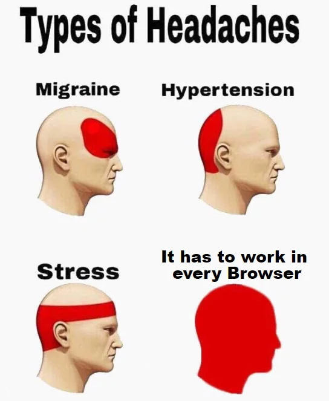

Wat heb ik vandaag gedaan: gewerkt aan mijn visietekaartje, een breakdown-schets gemaakt en een journal gestart.
Schrijf in je learning journal kort op wat je vandaag gedaan hebt.
Wat heb je gedaan vandaag? Squad page afgemaakt.
3 dingen die je hebt geleerd?
@media (min-width: …) en pas stijlen aan voor grotere schermen.
Ik weet hoe ik met GitHub iteratief kan werken, issues en sub-issues gebruik en kan uitleggen wat een fork, clone, commit, push, pull, merge en conflict zijn. = 3
Ik weet wat HTML-elementen, tags en attributen zijn, hoe ik HTML kan valideren en wat selectors, properties, values, units en combinators zijn in CSS. = 2
Ik weet hoe ik Figma gebruik om te variëren, interactieve prototypes maak en kan bepalen wanneer ik verder ga in code. = 2
Ik ken alle Layout Modes in CSS, weet wanneer ik welke inzet en hoe ik ze kan toepassen en combineren. = 2
Ik weet wat de WCAG richtlijnen zijn, hoe ik een WCAG audit uitvoer met automatische en handmatige tests en hoe ik resultaten verwerk. = 3
Ik weet hoe ik met alleen HTML een prototype maak en waarom een goed fundament belangrijk is voordat ik verder bouw. = 2
Ik weet hoe ik Mobile First ontwerp en ontwikkel, hoe ik dit herken in CSS en wat de voordelen zijn. = 2
Ik weet regels voor leesbaarheid van tekst, hoe ik typografie aanpas met CSS en welke units ik gebruik. = 2
Ik weet hoe kleurcontrast samenhangt met visuele hiërarchie en toegankelijkheid en hoe ik dit kan testen en verbeteren. = 2
Ik weet hoe ik een duidelijke Readme en Wiki maak, Markdown toepas en mijn werk presenteer tijdens een Sprint Review. = 1
Ik weet wat specificity, cascade en inheritance betekenen en kan dit uitleggen met een schets. = 1
Ik weet verschillende Gestalt wetten te benoemen en hoe ik ze inzet in ontwerp. = 1
Ik weet hoe ik formulieren maak in HTML, validatie toepas, states style met CSS en het verschil tussen labels en placeholders. = 2
Ik weet wat Custom Properties in CSS zijn, hoe je ze gebruikt en dynamisch inzet. = 1
Ik weet de basis van programmeren zoals variabelen, functies, loops en datatypes en het verschil tussen imperatief en declaratief. = 1
Ik weet wat keyframe animaties zijn, hoe ze verschillen van transitions en wanneer ik welke gebruik. = 1
Ik weet het verschil tussen feedback en feedforward en hoe dit samenwerkt in een UI. = 1
Ik weet wat een gebruikerstest is, hoe je die voorbereidt en hoe je tot bruikbare testresultaten komt. = 1
Ik weet hoe ik met querySelector, addEventListener en classList micro-interacties toevoeg met JavaScript. = 1
Ik weet wat UI events en event properties zijn en wat een callback functie is. = 0
Ik weet hoe ik met GitHub iteratief kan werken, gebruik issues en sub-issues, en ik kan uitleggen wat een fork, clone, commit, push, pull, merge en conflict inhouden. = 3
Ik weet van HTML wat elementen, tags en attributen zijn, hoe ik mijn HTML kan valideren, en van CSS wat selectors, properties, values, units en combinators zijn. = 3
Ik weet hoe ik Figma kan gebruiken om te variëren, hoe ik interactieve prototypes kan maken, en ik kan inschatten op welk moment ik verder ga in code. = 2
Ik weet alle Layout Modes in CSS en eigenschappen van elke te benoemen, kan bepalen welke ik inzet en ze toepassen en combineren. = 3
Ik weet wat de WCAG richtlijnen zijn, hoe ik een WCAG audit uitvoer met automatische en handmatige tests en hoe ik testresultaten verwerk. = 3
Ik weet hoe ik met alleen HTML een prototype maak en waarom een robuust fundament belangrijk is voordat ik volgende lagen toevoeg. = 3
Ik weet hoe ik Mobile First ontwerp en ontwikkel, hoe ik dit herken in CSS, hoe CSS nesting helpt en wat de voordelen zijn. = 3
Ik weet regels voor leesbaarheid van tekst en hoe ik typografie aanpas met CSS, inclusief properties en units. = 2
Ik weet hoe kleurcontrast samenhangt met visuele hiërarchie en toegankelijkheid en hoe ik dit kan testen en verbeteren. = 3
Ik weet hoe ik een duidelijke Readme en Wiki maak met Markdown en hoe ik mijn werk presenteer tijdens een Sprint Review. = 2
Ik weet wat specificity, cascade en inheritance betekenen en kan dit uitleggen met behulp van een schets. = 2
Ik weet verschillende Gestalt wetten te benoemen en kan ze toepassen in ontwerp. = 2
Ik weet hoe ik formulieren maak in HTML, validatie toepas, states style met CSS en het verschil tussen labels en placeholders. = 2
Ik weet wat Custom Properties zijn, hoe je ze gebruikt en hoe ze samenwerken met specificity, cascade en inheritance. = 1
Ik weet wat variabelen, functies, loops en datatypes zijn en het verschil tussen imperatieve en declaratieve talen. = 1
Ik weet wat keyframe animaties zijn, hoe ze verschillen van transitions en wanneer je welke gebruikt. = 3
Ik weet het verschil tussen feedback en feedforward en hoe duidelijke labels de UI verbeteren. = 2
Ik weet wat een gebruikerstest is, hoe je deze voorbereidt en hoe je tot bruikbare testresultaten komt. = 2
Ik weet hoe ik met querySelector, addEventListener en classList micro-interacties toevoeg in JavaScript. = 2
Ik weet wat UI events en event properties zijn en wat een callback functie is. = 1
0pnt = 🫣 | Ik ben hier nog niet aan toe gekomen
1pnt = 😅 | Ik heb hiermee geëxperimenteerd, maar ik weet nog niet goed wat dit is
2pnt = 🤓 | Ik begrijp dit, maar ik kan het nog niet (helemaal) zelfstandig toepassen
3pnt = 🥞 | I got this
Totaal aantal punten: 29
0pnt = 🫣 | Ik ben hier nog niet aan toe gekomen
1pnt = 😅 | Ik heb hiermee geëxperimenteerd, maar ik weet nog niet goed wat dit is
2pnt = 🤓 | Ik begrijp dit, maar ik kan het nog niet (helemaal) zelfstandig toepassen
3pnt = 🥞 | I got this
Totaal aantal punten: 50